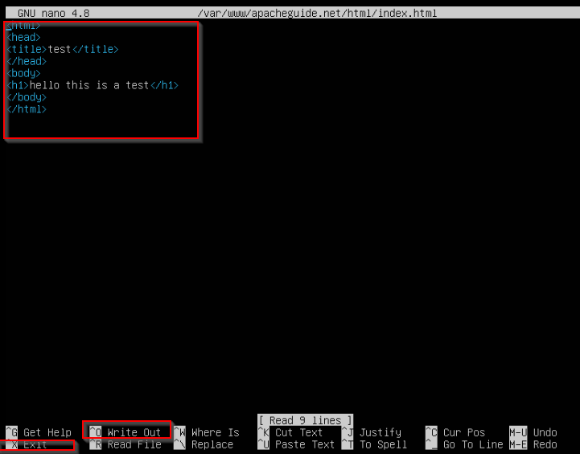
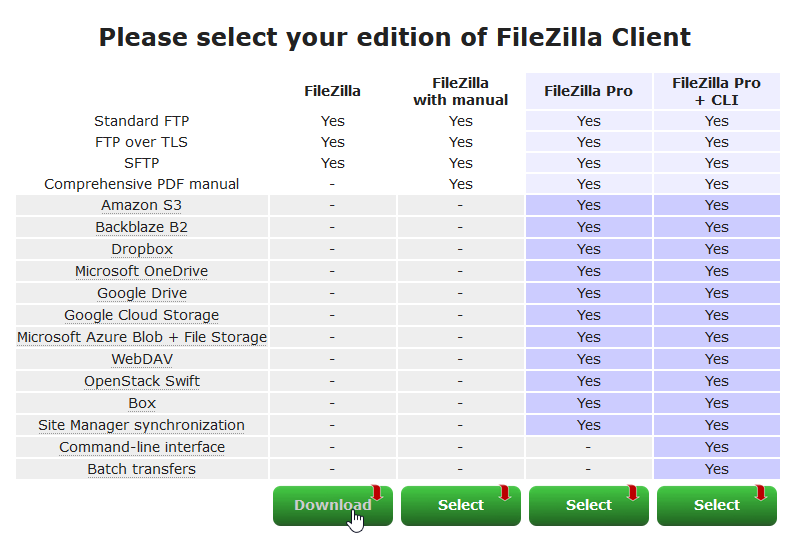
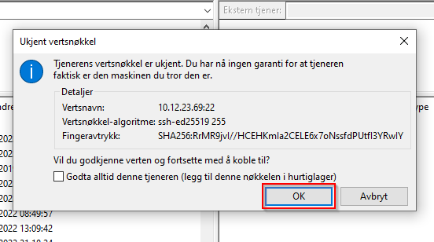

Apache Webserver Tutorial
In this guide I will go through how to set up an Apache 2 webserver using Ubuntu on VMware vSphere.
Before starting, you should have logged into Global Protect, then logged into vSphere and then started the setup of a new VM.
Step 1
Make a new virtual machine, and go through the options.
• First name the machine, pick a compute resource and storage, pick compatibility (however I recommend leaving this as is).
• Pick Linux and then Ubuntu 64 bit.

Step 2
Set up the hardware and launch the VM.
• Go to browse under dummy_temp_switch and select the internet you wish to use.
• Go under New Hard disk and change Thick Provision Lazy Zeroed to Thick Provision.

• Go to new CD/DVD Drive and change Client Device to Content Library ISO File, then pick “ubuntu-20.04.3-live-server-amd64” (if this doesn’t exist pick any that have ubuntu live server in the name). Toggle “Connect at power on” on.

• Switch to VM Options, go under Boot Options and allow the selected checkbox.
• Confirm the options and press power on to start the VM, then press the Launch Console button and confirm using your desired console viewer.

Step 3
Run though the BIOS setup utility screen.
• Navigate to the Boot menu and press enter on Network boot from VMware VMXNET3 once (there is no feedback on the click, so just press once and move on).
• Now move to the Exit menu, press Save Changes, and confirm.
• After this, press f10 to exit the setup utility screen.
Step 4
Set up system settings for the server.
• Select your desired keyboard language, and move on to this following screen. Pick Edit IPv4.
• Pick Manual.
• And then fill out the IPv4 configuration.
• Save the configurations, and press continue until you get to the storage configuration screen. Press done again, and press continue.
• After this, fill out the information illustrated in the image below, and press done.
• Now on the SSH setup, turn on Install OpenSSH server and press done once again.
• Finally, you will see this screen, it will load for a while and it might take a few minutes, after it stops moving and the Reboot Now button appears, press it and viola, you’ve set up the system settings for the server.
Step 5
Set up Apache2 on the server.
• Log in to the server.
• Type the following for root access, so that you don’t need to type your password for permission to execute certain commands.
• Now type this, it updates the packages that need to be updated.
• The following installs Apache 2.
• Check the version of Apache 2.
• Open the app list.
• We will be using the ‘Apache’ app, so type the following.
• Check the ufw status, it should be inactive right now, which means Apache is allowed in the firewall.
• Check with the below command if the server is up and running, if so you should be able to visit the pre made template page from Ubuntu.
• To get its address, type this.
Step 6
Set up your own template site.
• Type the following to create the directory of your template (and later actual) site. Keep in mind that you should change the ‘apacheguide.net’ part to your own address. This is simply what I chose to go with.
• Change ownership of the directory to the current user.
• Assign the necessary permissions for you to edit files inside the template directory.
• Make the template html file and open it in the nano editor.
• Type the html seen below, then input ctrl + O to save and then ctrl + X to exit the editor.
Step 7
Set up a virtual host.
• Type the following, it will set up a conf file inside the apache2 sites-available directory that was installed when you installed Apache.
• Type the following (and make sure there are no spelling errors as that will stop the code from working, and it is a pain to go back and fix), then save and exit with ctrl + O and ctrl + X.
• Enable your own virtual host file.
• Disable the default virtual host file.
• Restart apache2, this will set the website up so you can visit it on the url you got from the ‘hostname -I’ command earlier.
Step 8
Upload your own website to the server using FileZilla.
• Download FileZilla client from https://filezilla-project.org/.
• Select the default FileZilla version.
• Press the button in the top left, and then press new site in the window that popped up.
• Name the site, then fill out the information to the right with your own server’s IP and your login, this essentially logs you in through. (FileZilla is set up in Norwegian in the images, however you should be able to find out what to do from this, in the worst case you could translate the words to English.)
• Here it should show a warning that the machine you’re trying to connect to could be the wrong machine, press OK and continue, because as long as you entered the correct IP while connected to global protect, it should have connected to the correct server.
• When you’ve connected successfully, go to the root directory and navigate to the template directory you set up earlier in the tutorial.

• Navigate to the actual website you wish to upload to the server.
• You now want to change the permission to make anyone able to write, this is represented by typing -R 777, the 777 is that all permissions are enabled for anyone, you will want to turn this back to 755 later to give only the user permissions.
• Now use your newfound permissions to upload your files to the server by selecting all your wanted files, and then uploading them. This is now possible because you changed permissions to 777, again, remember to switch back to 755 on permissions.

Congrats! You have successfully set up your own website on the Apache Webserver. You can access it through the same IP you visited your template website with, you might also need to restart the webserver using ‘sudo systemctl restart apache2’.